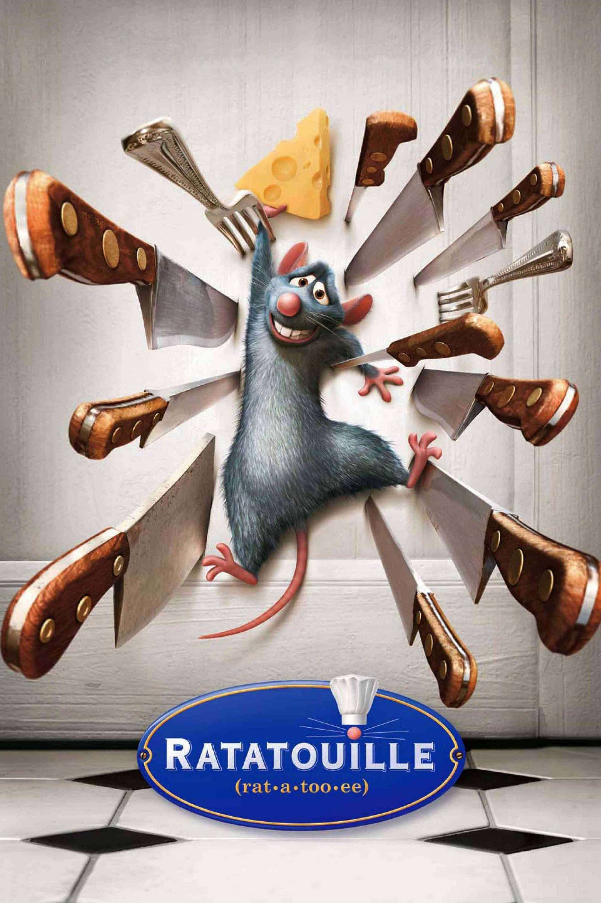
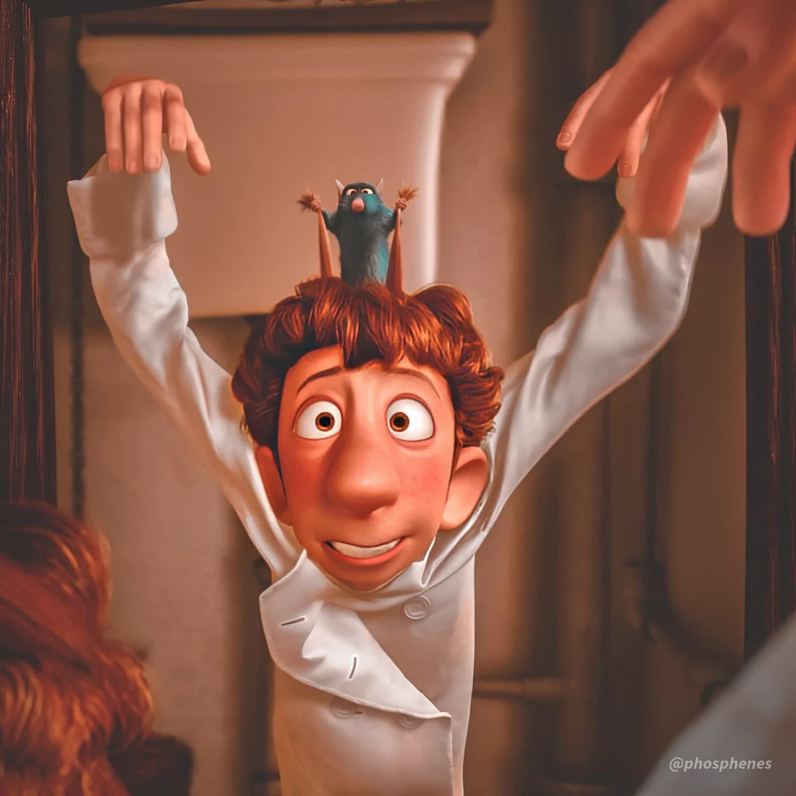
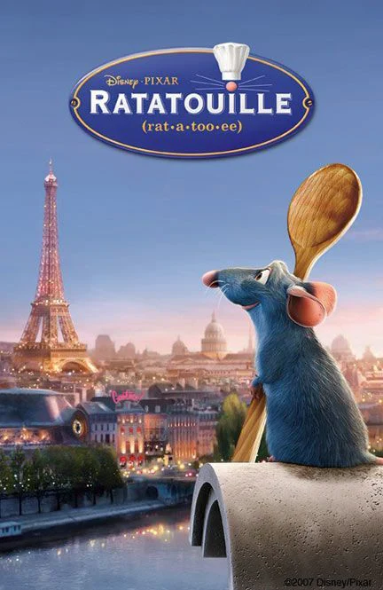

Animation, Adventure, Comedy
2007
111 minutes
Brad Bird
Ratatouille follows Remy, a talented young rat with dreams of becoming a great French chef despite society's expectations. After forming an unlikely partnership with kitchen worker Alfredo Linguini, Remy secretly helps create extraordinary dishes that transform one of Paris's most famous restaurants.